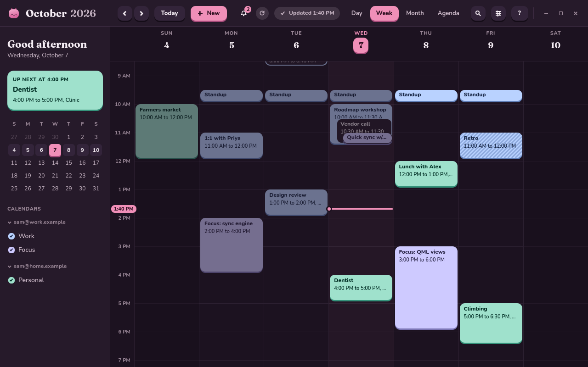
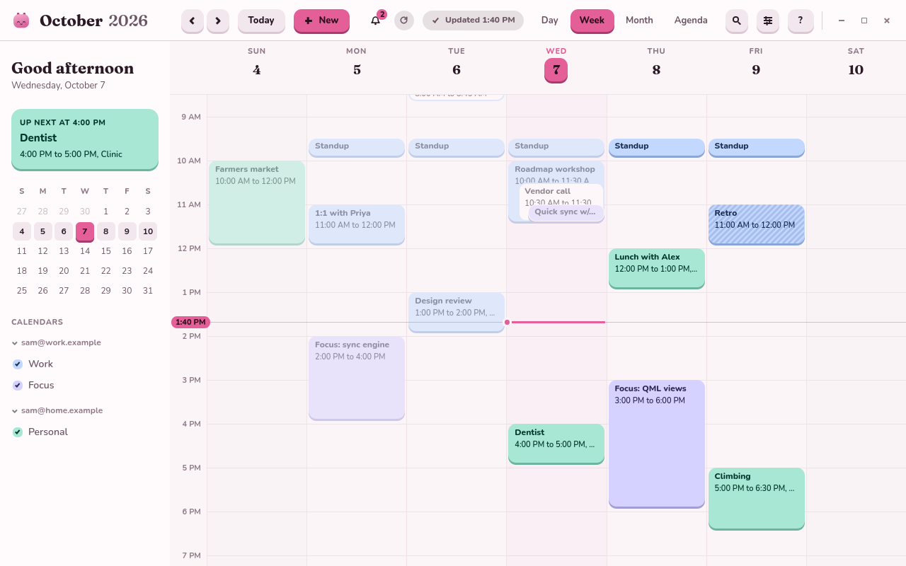

Callie keeps up with your Google calendars and gives you day, week, month and agenda views that are quick to read and quick to change. Free, open source, no subscription, and no AI features you did not ask for.


callie command lists, searches, adds and answers, with JSON for scripts.Download the package for your system from the latest release, then install it:
sudo dnf install ./callie-*.x86_64.rpm # Fedora
sudo apt install ./callie_*_amd64.deb # Debian and UbuntuOr build it from source, as the README describes.
Callie is a calendar. It does not do tasks, scheduling links, or AI. It has no account system and no servers: your calendar data goes between your computer and your calendar provider, and nowhere else, apart from places you type, which Callie can look up on OpenStreetMap. Read the privacy policy for the details.